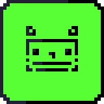

> О ПРОЕКТЕ
Utilib++ - библиотека для C++ с такими возможностями:
- Gui с помощью Raylib
- Макросы и улучшения синтаксиса cpp
- Мини утилиты для написания программного обеспечения
- Подробнее в документации

// C++ Utility Library
Utilib++ - библиотека для C++ с такими возможностями: